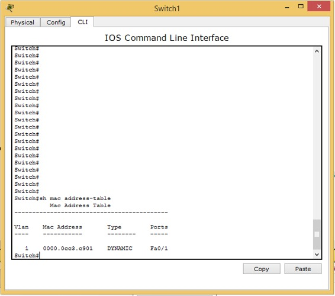
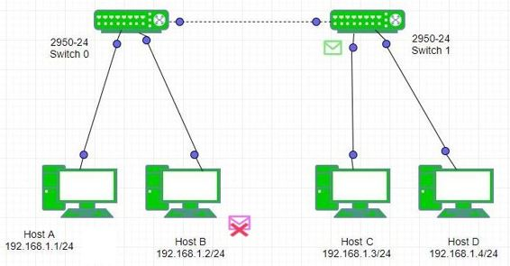
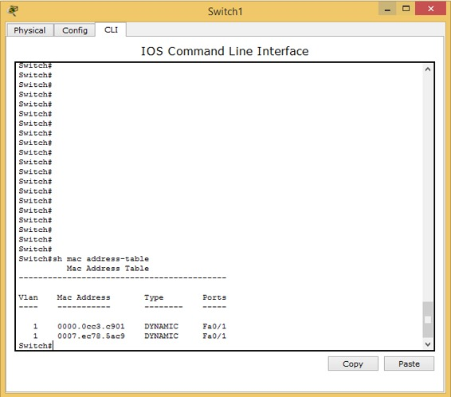
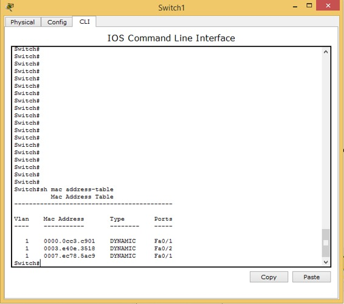
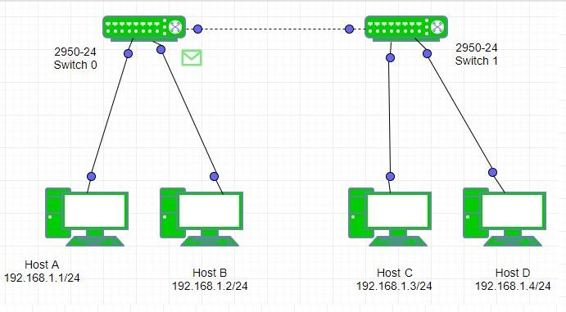
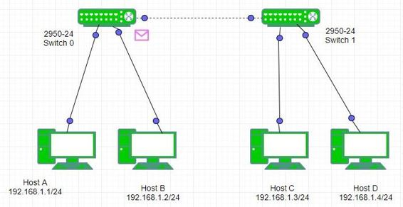
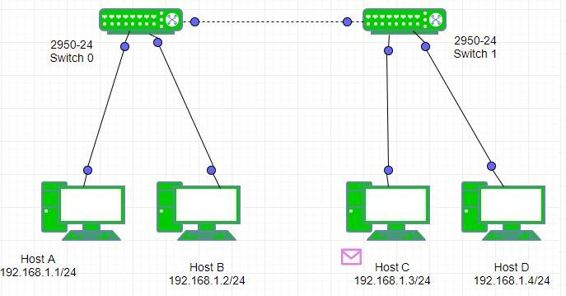
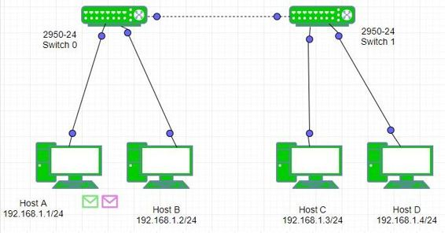

Prerequisite – Switch
Switch is a layer 2 device which works on the basis of MAC address (physical address) of a device. Switch mainly performs these functions:
- Learning – The switch learns the MAC address of the device on the switch port on which it receives the frame.
- Forwarding – The switch does 2 types of message forwarding:
(a) Unicast: The switch unicast the frame to the destination only when it has an entry for destination MAC address in its MAC address table.
(b) Unknown Unicast: When a switch receives a unicast frame for a destination for which switch has no entry in its MAC table then the switch simply broadcast the frame through all ports. This is known as flooding. - Filtering – The frame will be forwarded through that switch port only for which the switch has already learned the MAC address in its MAC table.
- Loop avoidance – For redundancy, two switches are connected to each other through two links which can also result in layer 2 loops. These loops are avoided by switch by using STP(Spanning tree protocol) protocol.
Note – An entry in the switch MAC table, also known as CAM (Content Addressable Memory), can remain upto for 300 seconds. When a frame is received for a destination MAC address, the time limit of 300 seconds gets reset. MAC table has 4 entries:
- Port Number – The switch port attached to the destination MAC.
- MAC Address – MAC address of that host which is attached to that switch port.
- Type – It tells us about how the switch has learned the MAC address of the host i.e static or dynamic. If the entry is added manually the it will be static otherwise it will be dynamic.
- VLAN –It tells about to which Vlan the host, attached to that switch port, belongs to.
How switch learns the Mac address?
The switch will update it’s MAC table only when it receives any frame from the host. If there is no entry for the destination host then switch will first learn the Mac address of the source host and then flood the frame through all its ports except the port on which the frame is received but if there is an entry for the destination host in Mac table of switch then it will be unicast.
Let’s see this by an example.
Example – Here is small topology having host A (192.168.1.1/24), host B (192.168.1.2/24), host C (192.168.1.3/24), host D (192.168.1.4/24) and 2 switches in between. It will understand the switch MAC address learning process by ping from host A to Host C. Initially both switches MAC tables has entry for other switch only.


As soon as user try to ping host C, he see that 2 packets are generated: one of ICMP and other of ARP.

First, ARP will be resolved i.e ARP request is broadcast in the network by host A.

The switch0 receives the broadcast ARP request and will update it’s MAC table .

Note – The switch0 already has an entry for Switch1. The switch0 broadcast the frame in return to the switch1 and the PC. The host B will discard the frame as it is not destined for it.

Now, the switch1 will receive the frame and will first update it’s MAC table.

Note – Here, the switch1 has learned the different MAC address of switch0 and host A on same port fa0/1 because the host A is attached to the switch0 on fa0/1 therefore showing same port fa0/1. Now, the switch1 will broadcast the ARP frame to host C and host D as these are present in same broadcast domain.

The host C will generate an ARP reply which is unicast to the switch . The switch1 will update it’s MAC table putting an entry for host C.

Both the switch(switch0 and switch1) will unicast this ARP reply to the host A this time because this time switches have already learned the MAC address of host A.

The frame is successfully delivered to host A resolving the ARP.

Now the ICMP echo request is unicast to the host C.



The ICMP echo reply is unicast to the host A.



Remember –
When the switch will broadcast? If the host has broadcast a frame then the switch receiving it will broadcast it further through its ports anyway.
When the switch will do flooding (unknown unicast)? If the host has unicast a frame and the switch doesn’t has destination Mac address in its Mac table then the switch will flood through all its ports except the port on which the frame is received.
When the switch will unicast? If the switch has an entry for the destination host in its Mac table then the frame will be unicast.